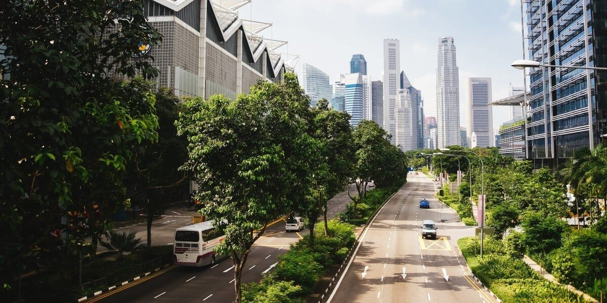
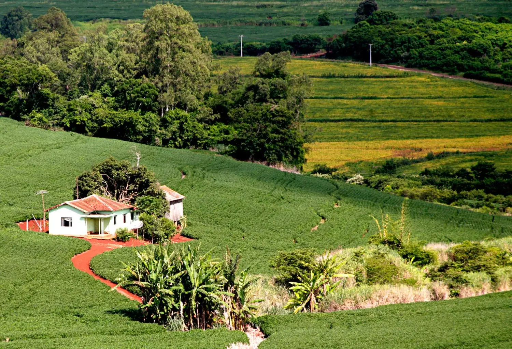
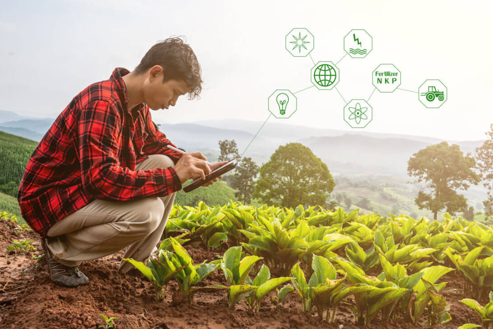

𝐃𝐞𝐬𝐞𝐧𝐯𝐨𝐥𝐯𝐢𝐦𝐞𝐧𝐭𝐨 𝐒𝐮𝐬𝐭𝐞𝐧𝐭𝐚́𝐯𝐞𝐥 𝐞𝐦 𝐀́𝐫𝐞𝐚𝐬 𝐑𝐮𝐫𝐚𝐢𝐬
O desenvolvimento rural sustentável em áreas rurais envolve práticas que visam garantir o bem-estar das comunidades, a preservação dos recursos naturais e a manutenção da produtividade agrícola a longo prazo. Isso inclui a implementação de práticas agrícolas sustentáveis, a diversificação da economia rural, a promoção de políticas públicas que apoiem o desenvolvimento rural e a valorização da cultura e do conhecimento local.
Tópicos Principais
𝙀𝙣𝙚𝙧𝙜𝙞𝙖 𝙧𝙚𝙣𝙤𝙫𝙖́𝙫𝙚𝙡
A energia renovável pode ser utilizada tanto em áreas rurais como urbanas, com vantagens específicas para cada contexto. Em áreas rurais, a energia solar fotovoltaica e a energia eólica são comumente aplicadas para reduzir custos e garantir o acesso a eletricidade em locais remotos. Em áreas urbanas, a energia solar em telhados e painéis solares em construções podem ser usadas para gerar energia de forma sustentável, reduzindo a dependência de fontes fósseis. a energia renovável oferece diversos benefícios, como a redução de custos com energia elétrica, a proteção do meio ambiente, a diminuição das emissões de gases de efeito estufa e o aumento da segurança energética. No entanto, também existem desafios, como a necessidade de investimento inicial, a variabilidade de algumas fontes (como solar e eólica), a necessidade de infraestrutura de transmissão e a possível interferência com a paisagem urbana.

𝑰𝒏𝒄𝒍𝒖𝒔𝒂̃𝒐 𝒔𝒐𝒄𝒊𝒂𝒍 𝒆 𝒃𝒆𝒎-𝒆𝒔𝒕𝒂𝒓
A inclusão social e o bem-estar sustentável nas áreas urbanas e rurais envolvem a garantia de que todos tenham acesso a oportunidades e condições de vida dignas, ao mesmo tempo em que se promovem práticas que preservam o meio ambiente e garantem a sustentabilidade a longo prazo. Isso significa investir em infraestrutura, serviços básicos, educação, saúde e oportunidades de emprego, além de promover a participação social e a justiça social.A promoção de práticas agrícolas sustentáveis, a preservação da biodiversidade, o uso racional da água e a gestão adequada dos recursos naturais são fundamentais para a sustentabilidade rural. Garantir o acesso a uma educação de qualidade e a serviços de saúde para todos, especialmente para as crianças e jovens rurais, é crucial para o desenvolvimento do capital humano.
𝑨𝒈𝒓𝒊𝒄𝒖𝒍𝒕𝒖𝒓𝒂 𝒔𝒖𝒔𝒕𝒆𝒏𝒕𝒂́𝒗𝒆𝒍
A agricultura sustentável é um sistema de produção de alimentos que busca conciliar a necessidade de alimentar a população com a preservação do meio ambiente, da economia e da sociedade, garantindo que as próximas gerações também possam ter acesso a recursos e alimentos. Isso significa adotar práticas agrícolas que minimizem os impactos negativos no ecossistema, como o uso de agrotóxicos, e que promovam a saúde do solo, a biodiversidade e a qualidade dos produtos. A agricultura sustentável é fundamental para garantir a segurança alimentar, proteger o meio ambiente e promover o desenvolvimento socioeconômico. Ao adotar práticas mais sustentáveis, é possível garantir um futuro mais próspero e justo para todos. 
𝑫𝒆𝒔𝒂𝒇𝒊𝒐𝒔 𝒆 𝑶𝒑𝒐𝒓𝒕𝒖𝒏𝒊𝒅𝒂𝒅𝒆𝒔
O desenvolvimento sustentável em áreas urbanas e rurais enfrenta desafios como desigualdade social, poluição, falta de infraestrutura e adaptação às mudanças climáticas, mas também oferece oportunidades como inovação tecnológica, energia renovável e gestão eficiente de recursos. Em áreas urbanas, a mobilidade, a gestão de resíduos e a habitação são pontos críticos, enquanto em áreas rurais, a agricultura sustentável, a preservação ambiental e o acesso a serviços básicos são prioritários. O acesso limitado a água tratada e à coleta de esgoto é um problema crônico em muitas áreas. A garantia de acesso a serviços básicos, educação e oportunidades de emprego pode reduzir a desigualdade e melhorar a qualidade de vida e A transição para fontes de energia limpas, como solar e eólica, pode reduzir a poluição e aumentar a sustentabilidade. 
꧁•⊹٭𝚂𝚘𝚋𝚛𝚎 𝚘 𝙱𝚕𝚘𝚐٭⊹•꧂
Este é um blog que apresenta artigos de opinião sobre questões relevantes relacionadas à sustentabilidade em áreas rurais e urbanas,Oferecerecendo uma informções de como as pessoas podem adotar práticas mais sustentáveis em seu dia a dia.
Entre em Contato
Para dúvidas, sugestões ou mais informações, entre em contato conosco!